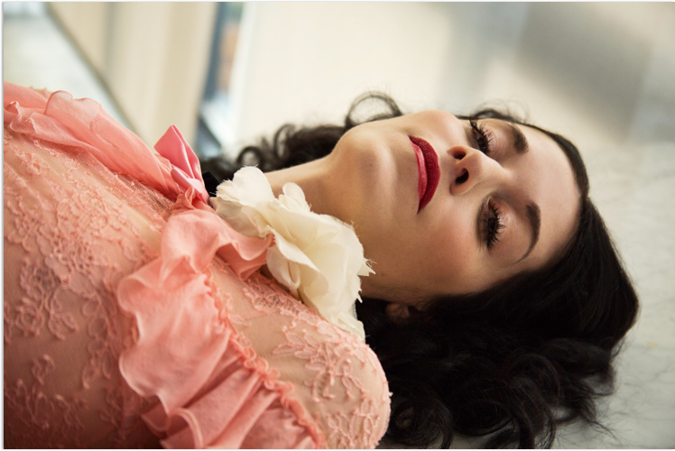
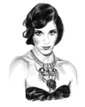
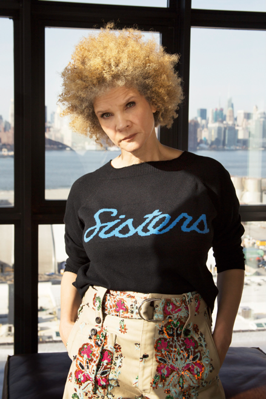

Calandar+


August 15, 2017

Vive Le Feminin
10 minute read

In Conversation
Sarah Sophie Flicker talks shape-shifting, image-making and what it means to be political with activist and writer Michaela Angela Davis. The two long-time friends discuss the current state of affairs, and having a lot of work to do.

Interview
Sarah Sophie Flicker
Photography
Stacy Mark
Styling
Liz McClean
VIEW ALL
It’s me, Sarah Sophie, and I’m here with Michaela Angela Davis, just one of my favourite people. We’re going to tell you the story of how we met, but first we’re going to back up a little bit and quickly tell the story of you, so everyone can know how epic you are.
Oh gosh. I guess I identify as an ‘image activist’ now, but I got here through fashion and really looking at the relationship between style and culture, and very specifically style and the culture that came out of the hip-hop generation. I was a fashion stylist very early—that’s how I got through school. My first shoot was with Richard Avedon; I was an assistant.
That’s amazing.
That was my first time ever on a set, it was Richard Avedon, and my aunt was shooting a campaign with Virginia Slims, and it said, ‘You’ve come a long way, baby’. Super chic.
I have the sweater of that in my closet that I have to show you. You might need to borrow it. So good.
My aunt was a stylist on that campaign. It was the first time there was a black model in this major campaign. She was a fashion editor at Harper’s Bazaar, and Richard Avedon was like, ‘I want to work with her exclusively’. He plucked her out of the staff—he was so powerful by that time, he could. She may have been the first sort of freelance fashion stylist that worked exclusively with him. We worked with Andie MacDowell on Calvin Klein—I remember I was in the back room, because all I did was, like, fold clothes and put things away, you know. And Andie MacDowell was working on her Southern accent in the background, and I was a theatre major student with her in the dressing room, working with her on lines! It was crazy. I had a really wonderful life. I came to New York as a teenager in the 80s, in fashion.
Where were you before you were in New York city?
Washington, D.C., when it was called ‘Chocolate City’, which really built me. I went to an amazing school for the arts there, I was a theatre major but I was also really interested in fashion. Soul Train and Style with Elsa Klensch were my Saturday. Those two things informed me.
Yes! My mom and I would just sit and watch, and also I loved Solid Gold. I loved it. But Elsa Klensch—I loved her. And that was, like, the only way you would find out about anything. I did love MTV’s House of Style too, but that came later.
Those two, Style with Elsa Klensch—because Style had this sort of, you know, intellectualism or aristocracy. And then Soul Train was just what American kids looked like. So those two things, really, like, that’s who I am. I’m Soul Train and I’m Style with Elsa Klensch.
Those two, Style with Elsa Klensch—because Style had this sort of, you know, intellectualism or aristocracy. And then Soul Train was just what American kids looked like. So those two things, really, like, that’s who I am. I’m Soul Train and I’m Style with Elsa Klensch. That’s such a good combination. If you’re going to be anything, that’s what you should be. My aunt used to give us all her old Vogues and I remember having this very weird, natural reaction. I would look at the fashion and tear off the heads of the models because I wanted to just look at the clothes, and sometime early on I realised that all the faces looked the same and that I wanted to just look at the clothes and not think that only white, blonde women could wear that. I just really wanted to look at the clothes in an objective way. Just for the beauty of the fashion. That’s such a good instinct, it’s a smart instinct. A self-protective instinct. And now I have a young daughter and I’m conflicted. I feel like I can get her Teen Vogue. Teen Vogue—they have risen to a place. For me, I remember it was Seventeen, but it was the same thing of like, ‘Where are my friends?’ I remember it talked about the stuff you wanted to talk about, but Teen Vogue—this is what happens when you have more diversity at the table, because when it first came out, I was like, ‘Oh it just looks like younger people with the same Vogue’; like, really expensive clothes, very dry kind of editorial. And now they’re all over everything. Like, all over the election. I remember looking at Elle magazine— They really started that you know, Elle had not just diverse models, but their fashion was very, sort of, bohemian, eclectic, cultural-mix. But urban, also. It wasn’t so buttoned up. Yes, and straight off the runway collection. They had fun and they played with things and they mixed designer fashion with downtown fashion with, you know, something that they found in whatever country they were shooting in… Elle was really important, I think, in the 90s. And then I had my magazine. I was editor-in-chief of Honey. It was so good I loved Honey so much. I was last editor-in-chief; it had a couple of lives, and I was the founding fashion director for Vibe.
Those two, Style with Elsa Klensch—because Style had this sort of, you know, intellectualism or aristocracy. And then Soul Train was just what American kids looked like. So those two things, really, like, that’s who I am. I’m Soul Train and I’m Style with Elsa Klensch. That’s such a good combination. If you’re going to be anything, that’s what you should be. My aunt used to give us all her old Vogues and I remember having this very weird, natural reaction. I would look at the fashion and tear off the heads of the models because I wanted to just look at the clothes, and sometime early on I realised that all the faces looked the same and that I wanted to just look at the clothes and not think that only white, blonde women could wear that. I just really wanted to look at the clothes in an objective way. Just for the beauty of the fashion. That’s such a good instinct, it’s a smart instinct. A self-protective instinct. And now I have a young daughter and I’m conflicted. I feel like I can get her Teen Vogue. Teen Vogue—they have risen to a place. For me, I remember it was Seventeen, but it was the same thing of like, ‘Where are my friends?’ I remember it talked about the stuff you wanted to talk about, but Teen Vogue—this is what happens when you have more diversity at the table, because when it first came out, I was like, ‘Oh it just looks like younger people with the same Vogue’; like, really expensive clothes, very dry kind of editorial. And now they’re all over everything. Like, all over the election. I remember looking at Elle magazine— They really started that you know, Elle had not just diverse models, but their fashion was very, sort of, bohemian, eclectic, cultural-mix. But urban, also. It wasn’t so buttoned up. Yes, and straight off the runway collection. They had fun and they played with things and they mixed designer fashion with downtown fashion with, you know, something that they found in whatever country they were shooting in… Elle was really important, I think, in the 90s. And then I had my magazine. I was editor-in-chief of Honey. It was so good I loved Honey so much. I was last editor-in-chief; it had a couple of lives, and I was the founding fashion director for Vibe.
That’s amazing, I didn’t know that.
Vibe to me was the time, that moment, where we were like, ‘We are going to define our culture, in real time’. It wasn’t just music. It was fashion, politics, economics, language, art, dance. We were not going to let anyone else define it for us because we had seen another big cultural explosion of jazz—which is not as expansive as hip-hop—but we saw jazz kind of be defined through this euro-centric lens, from a removed time. Like when jazz was hot and hip, and these were the hippest kids in the world, there wasn’t this media who could talk about them, who could write about them in any real-time way. So we saw that hip-hop was like this. Anyway, I’d come through sort of the regular fashion mentoring, working on the sets with Richard Avedon. I wanted to be a stylist like my aunty and travel the world and be fabulous. I remember I got my first little photo in Vogue and I forget—it was with an opera singer, I don’t know what it was—it was Vogue and I was in the pages and I was in my twenties. I was at some event and I saw Susan Taylor there and she looked extraordinary.
Wow, that’s such a good question.
Susan Taylor is—I guess you would say, editor—she is the soul of Essence magazine. And she is the closest thing we had to a queen. She’s been away from the magazine for a while but she was our Anna Wintour, our Diana Vreeland, our Tina Brown, all wrapped up into one. Big, beautiful, black goddess. And I remember seeing her, she had on some Norma Kamali something, with shoulder pads out to here, and she didn’t look like her feet touched the ground. And she met me and she said, ‘Who are you?’—
I had on some outrageous outfit I’m sure—and I was like, ‘Oh I’m a stylist and I just got a picture in Vogue’. And she said, ‘Oh my god, that’s great, but what are you doing for your people?’
Wow, that’s such a good question.
And I was like, ‘What did you just say?’ And it’s interesting because I’d just had my daughter, a little—I call, ‘brown from a distance’ girl, you know, and I didn’t know that that’s what I’d started to think about. Like, what am I doing? Aside from just trying to be fabulous in New York and live on the Lower East Side and be, whatever. And so when she said that, something shifted. Two weeks later I was sitting in her office. A month later I was a fashion editor at Essence. Because what I saw was also all these really cool women coming, particularly through music. Kelis and Lauryn Hill and, who else was coming at that time? Foxy Brown, Eve, No Doubt, like, Pink—it was that era, and I felt like some of the traditional black magazines were too conservative for them and the white magazines couldn’t see how cool these girls were. These were the girls that were going to define who was cool and what is cool in American style and culture, right. So Susan kind of took me under her wing and she taught me to be the kind of editor that loves your audience. Susan loved black women and she poured that into me; that is my lens.
That is such an important lens to see it through, and obviously so revolutionary.
Yeah, I’m grateful. It was sustainable because it also helped me not make it so much about me, because my ego and my sense of ambition goes up and down; it’s unreliable. But loving the women that you’re serving—that’s an endless goal. So I’m really fortunate that she’s the one that swept me up. I came there to get the love and get taught and then we went to start Vibe. And when I left Vibe, that was just the most exciting time; that’s when I really started working with artists. But I left Vibe for political reasons, actually. It was right at the time when I saw women’s voices in hip-hop being squashed, just gone. We went from Lauryn Hill to Missy Elliott to Lil’ Kim and everyone in between, to, like, only Lil’ Kim and Foxy [Brown]—it had gotten so reduced and the images had gotten so hyper-sexual and so narrow and I started to really rebel against that.
I’m no hip-hop historian at all, but even I remember; in the beginning, it was even Queen Latifah and Salt-N-Pepa, and those to me were really empowering.
Totally. Because I was never like, ‘Oh we can’t have sexy’; we have to have this range.
But that shift also happened in the fashion world. All of a sudden it went from at least somewhat healthy and diverse to these skinny twelve year olds. Then also if you think back, like, when I show my daughter movies that were meaningful to me in the 90s, there’s so many great—I wouldn’t say robustly feminist, but like, smacking of feminism movies, and then it all kind of stopped for a while. It crossed the board; something shifted, and I’m curious.
I was so focused on what was happening in hip-hop because we were so empowered by the music and the voice, and we knew that urban culture was leading culture.
I was so focused on what was happening in hip-hop because we were so empowered by the music and the voice, and we knew that urban culture was leading culture.

That’s right.
And so it was scary that women were being cut out of the biggest movement in culture that we had seen in a long time. We were never really in the jazz scene and there were voices in soul, but when you think of soul music you think of James Brown. So it was just appalling. I had started to talk about it and Vibe was actually starting to perpetuate it. It was very male, it was very white male, and so I left—for political reasons—but I didn’t burn any bridges. I was like, ‘I can’t do this, because I love it too much’. So you start to critique, and then a whole group of women who were critiquing the culture—like Joan Morgan, Lisa Jones, Dream Hampton—started to emerge. And we were called these ‘cranky feminists’, and there was very little room for black women to critique hip-hop, particularly, and there was violence—it was a whole lot of stuff going on. And I kind of didn’t find a real activist voice. I worked more with artists and it was exciting, because it was also the same time people like Seal and Meshell Ndegeocello—
So good.
I worked with Lenny Kravitz, Diana Ross. Actually Tracee [Ellis Ross, Diana Ross’s daughter and star of Black-ish] delivered her mother to me. That’s a whole other story because I love her to this day… But I did start to see more and more women getting damaged as a result of the images that were either being erased—meaning we weren’t in there—or when we were in there we were literally on stripper poles. And so it just got inevitable. And some very brave young women at Spelman College… I had gone back to Essence magazine; I got asked to do a really interesting job to combine fashion, beauty and culture. So while I was at Essence, Spelman College had challenged Nelly, the rapper, who wanted to do a bone marrow drive there with his sister, who was sick. And the students there were like, ‘Yeah, we’ll do this but you have to talk to us about “Tip Jar”’, which was a video where he literally had a credit card go down the crack of a woman’s ass, and they just wanted to have a convers—
[Laughs]
Right?!? And he declined. And they were like, ‘Well, we can’t.’ I thought they were so brave. So I hosted this big town hall for these young women to talk to music executives, and I realised at that moment what I was doing—that I was working as an activist in service of our image.
I love that.
I also realised that these men were not prepared for young, smart women to question them about how they’re using our bodies. And, you know, some of those women went on to become quite feminist; like, they were dope. And so I realised I was going to be an image activist and I was also going to use whatever platform I had to particularly amplify the voices of young women, because they are so smart and so brave and so connected and they have all these tools that we didn’t have, and they’re global.
It’s interesting because, just being in the rooms that we’ve been in for the last however many months and having the conversations we’ve been having, you realise, whether you’re talking about feminism, about intersectional feminism, about race-relations—you know, whatever it is—if our young people just had this information early, these conversations would be so much farther along. We would just be so much farther along. For me, I feel so grateful because my parents were political—my mom’s Danish, so comes from a socialist democratic kind of thing, and my dad was in the Justice Department and did a lot of stuff with voting rights and all this—and so they raised me with a major moral compass, and luckily I went to a school that was good on stuff like this. But really, it was going to Mills College, which I just stumbled on, honestly. I decided to go there because my boyfriend, who was into Metallica, lived up the street, and I was like, ‘Well I’m already living here and I got in, I didn’t get into Berkeley, I’m going to go to Mills’. And what a blessing because I met my friend Rachel Noerdlinger, she was my first friend at Mills, and right away I was in every womanist studies class—you can’t take a class at Mills without it being feminist. I remember the environmentalism class was seen through a feminist lens. Anyhow, I just feel like it informed everything, and you moved through all the conversations that people have such a hard time having. Like, if you’re forced to have them earlier, or if you’re forced to deal with the fact that you’re white and have got privilege and that, if we’re talking about feminism, you have to talk about all women, and if you’re not stretching your brain to think about how it affects everyone and not just you—you’re doing a bad job.
I feel even with all the preparation and education that I’ve had and life experience, I don’t feel prepared for this time, though, to be honest. You know, from the moment that Trayvon Martin fell and I had gotten into this place where I was in public conversations, mostly about race and gender, and I started with the Anderson Cooper unit—
Wait, what is the Anderson Cooper unit? That sounds so undercover. I want to be in that unit.
So there’s groups of producers that work on different peoples’ shows. I’m very grateful to Anderson and his producers because they really liked me, and I’m an unlikely kind of person that would end up on CNN. Like, if you see particularly the women and particularly the women of colour—which is very few—no one is there for their opinion. But I’d been there for six years before, and Donna Brazile was kind of like this stateswoman, you know; Donna just makes you feel comfortable. She’s so smart and you’re going to go have some gumbo with her.
Wait, what is the Anderson Cooper unit? That sounds so undercover. I want to be in that unit.
So there’s groups of producers that work on different peoples’ shows. I’m very grateful to Anderson and his producers because they really liked me, and I’m an unlikely kind of person that would end up on CNN. Like, if you see particularly the women and particularly the women of colour—which is very few—no one is there for their opinion. But I’d been there for six years before, and Donna Brazile was kind of like this stateswoman, you know; Donna just makes you feel comfortable. She’s so smart and you’re going to go have some gumbo with her.
And then also talking about her menu every single day.
I know, you’d love her. I love her too.
I feel like I really would—people were going to throw her under the bus, and they keep coming for her and I’m like, come for anyone, but don’t come for Donna.
Oh my god, you feel like they’re going after your aunty. I’m like, stop it, have some respect, come on kids. It was the same way I felt at the DNC [Democratic National Committee] when John Lewis was talking with everyone booing him. I almost got into a fight.
Oh I missed that.
Oh my god. Because it was the first day.
There were some nut cakes there.
They were such brats. But you know what, that’s a whole other thing. I mean, I feel like this idea about respect and dignity—when your life was on the line, you were made to have to have that in a way, but I feel like, what I really saw, particularly in the campaign, that [for] so many of the white Americans, having respect and dignity is an option. It really depends on how you were raised and—
And your life doesn’t depend on it, so …
Exactly. Your parents didn’t have to be a certain way in order to survive, you know; it was never a threat for you to walk down the street. And so if it’s a threat for you to walk down the street, your parents probably were told to dress a certain way and it still could be a threat. Many of the images of lynchings that I see, people were in suits and ties and dresses and gloves. So that didn’t even matter. So back to not being prepared for this time, I feel maybe how my grandparents must have felt— maybe not quite as viscerally; like, I didn’t see Mike [Michael] Brown on the ground, but I did see a whole neighbourhood see him. I saw kids in the middle of the day and I’m just like, I don’t have any education to really deal with this in this relentless, excessive way. And then also getting very clear that this isn’t new. Actually all the rates, the murder rates, have gone down—
The technology is new.
It’s just the cameras are new and we have to deal with it in a new way. I didn’t grow up in poverty and violence, but I grew up— Everyone’s very close to it, right? But when you grow up having compassion for people, you still experience it; and for me, it’s CNN, because one of the things I saw I was being used to do was to bring the moral issue to the table. Not so much the political or the socio-political, but just to talk about how we might be feeling. And because that was my role, I had to look at these images, observe them, negotiate how to talk about the feelings, but not be too radical so I don’t get, you know, asked to leave the table. There’s a lot of shape-shifting that you have to do to be able to talk about black pain and violence and politics at that table. So I didn’t realise, probably, what this toll was taking on me, because I had to keep paying attention. I had to keep thinking about it. I had to talk to people. I had to go on the street. I wanted to bring what people were feeling on the street into those rooms, because they weren’t having them. I had to go to the bureau chief—who I’d never really met—at CNN, and I said, ‘Do you know that three black queer women started Black Lives Matter?’ They didn’t even know. I was like, y’all should probably go to a historian then.
Right; like, can you go talk to them?
And I had done that, and you know, again, that’s my role. I used this platform to let them know, and I would feed them names because they just didn’t know and they didn’t have people whose job it was to find out.
Which is shocking, for a news outlet. It is shocking.
But look at them. And that was one of the reasons I needed to stay here, because when shit hits the fan, most of America will flip on the CNN. I want to be there sometimes just to infiltrate.
But that’s a big emotional burden to take on.
Yeah man. But you go back to ‘I love them’. And they’re dying in the street, they’re marching, you know; like Ferguson—they’re in the street every day. I can be in a fancy studio and talk about it; that’s all I had to do.
White people need to get on board with it. Which is why Sally Kohn is such a—
Oh Sally.
Sally’s the best, because she just gets in there; but, you know… she is given limitations, too.
Yeah. She’s shape-shifting too. Everybody is shape-shifting because, you know, who’s still really setting the agenda? Even at CNN, there were a couple of pilots of a women’s show. I had done a couple of the pilots. They had done one a couple of times that they actually aired and then they abandoned it. It’s shocking to me that there’s not a lens where women are talking about what’s going on.
Isn’t it?
It’s crazy. I talked about that; there’s just not enough power. Even the woman that was SVP [senior vice president] of diversity and who made shows, I pitched this to her. I said, ‘When Hillary makes it—because she will—it will be the intersection of race and gender and we should be ready to talk about it.’ And even on a Saturday morning or Sunday morning, there’s nothing for women. There’s nothing.
There’s Joy-Ann Reid and that’s it.
That’s it. I mean, Joy is amazing—
But even, like, Melissa Harris-Perry—I preferred her show just because she erred towards bringing more women on to talk about women stuff.
But it was also—as much as me and all of my friends were living for Melissa—there’s a whole bunch of America that is not.
Oh for sure. Just to that point: this is how we met, was during this bananas election, and the thing that keeps shocking me about all of this—so tomorrow is 19 December and the electors are voting. I was like, well fuck it, I’m still going to try to write a letter to them and say, ‘Don’t do it’. So one of the things I wrote was, ‘Because we’ve just elected a president who’s been accused of sexually assaulting seventeen women’, and then I had to stop for a second and really let that—.
Sink in.
Let that one soak in. And we’re still not talking about it! And the fact that, if you try to bring up something about, you know, the intersection of race and gender in this election, everyone starts yelling at you like, ‘Well, nobody was talking class and identity politics and it’s your fault because you wanted to talk about all that stuff
too much.’
I think we really have to have such moral stamina to withstand that stuff. And that’s why we need to be in constant conversation with each other, to support each other. I wanted to retreat right away. So how I even got here was some fabulous young black woman, De’Ara [Balenger]. I think I was planted. Was it Minyon? I don’t know, it was either Minyon or Tanya—someone made De’Ara (Tanya, Minyon and De’Ara are all women who worked on Hillary Clinton’s presidential campaign) and I sit next to each other at a very small dinner party. We were talking then about how we were going to feel when we watch this black family walk out of the White House. This was months and months ago.
What was De’Ara’s title then?
It was ‘Outreach’? ‘Diversity outreach’? I don’t know, but I know it was about celebrities and artists and people of colour. But I was sitting next to her at this dinner party and we started talking and I’m like, ‘You do what? You work with Hillary? How many more are you?’ And she’s like, ‘Oh there’s several’, and so then I was like okay—
Because, just to be clear, you were asking De’Ara—because De’Ara is our friend who’s just, like, the smartest, hottest, fiercest, black girl you’ve ever met and has been working with Hillary and Huma [Abedin]—
For seven years or something like that.
Longer. Nine I think.
I don’t know, she looked like she was 20. Those are the women that I love, right. I collect them. They keep me fresh. So, I had no intention of really getting into this campaign. But at the time, Trump hadn’t risen; it was early. But I wanted to know more about her and more about the other young women, and particularly young women of colour, who had given their lives to working on this campaign. Like, why? Why are you with her? Why do you rock? Because I rock with you. But why do you rock with her? Because she asked me, ‘Would you be willing to work with them?’ and I was like, ‘I want to talk to you guys first’, and so we had an event where all the young women of colour came and we had cocktails and we invited other influential women so we could ask them: why do you rock with Hillary? Because I can get behind you easily. There was a lot of, you know, complications with Hillary Clinton, but I’m like, ‘You’re not complicated. I know how to love you easily; I know how to support you. So if that’s my on-ramp into working with the campaign, I’m down with that.’ And then when I learned about the Mothers of the Movement [group of mothers whose African-American children have been killed by police or from gun violence], there was nothing but women of colour all over this whole campaign.
That’s the thing that nobody knows, because—
This is what is heartbreaking to me—more that it was also the promise that her cabinet would be 50% women. That would have changed the world. And the things that were so important to us didn’t seem—like, it was so much bullshit going on that you were trying to fend off, these bigger issues had a hard time making it to the—
I mean, that was really the unbelievable— Just today I was listening to the news—
50%.
—women would’ve been in her cabinet, and that didn’t even scratch the surface. It was like screaming into a void.
That is game-changing, beyond.
We are still too in this to understand it, but I’m trying to make connections. All I know is that you were braver than I was, because I did not get on board with the campaign until after the primary just because it was too painful. Then I came right away.
And hit the ground running, though.
I mean, we hit the ground running, but it wasn’t to me ever like a competition between her and Bernie. Still, it’s scary to say, because people were agro about it and made you feel like you were the most milk toast feminist in the world if you had any connection to a woman being president.
That’s how diabolical it is though. That’s how patriarchy and racism, these things that are meant to suppress people… When you see how much effort and strategy has been put into them, I’m not surprised that we still have all this work to do, because there’s hundreds of years of investment in keeping women down, and keeping black people subordinate and—
And keeping us separate. That part is major.
And that’s what I’m really working through. Because it’s so much easier, after the campaign. I saw these women just bringing a full tint to it—these women had everything to lose and they kept working, and they were everywhere. You know, they were working through their heartache and they were in beauty salons and they were in churches and they were in the hood and they were in, you know, Martha’s Vineyard; like, you had every top to bottom, in terms of the political, I mean the socio-economic spectrum—black women were on the ground and doing work. And when the numbers came back and there was 94% of black women voted for Hillary Clinton, I was like, see? We do the work. And I just wanted to be like, fuck everybody else, I can’t trust anybody else, you know. Bernie’s men—the men didn’t do the equivalent. They didn’t go into bars and factories, or whatever—they didn’t do it. These mothers who had very little money, who were still grieving their children, who had an issue, you know, of gun control—they were able to focus and strategise, and I was just so—I’m still burned. But I remember sending that email to you and Rebecca (the amazing journalist and thinker Rebecca Traister) and I thought, ‘You know, I’m going to sound like a crazy lady—’
No!
But I didn’t, because I was so torn. It was like, ‘I really like you and I don’t want to retreat but I am mad and I just, I don’t know who to trust, but I’m going to try. Don’t let me go. Like, don’t let me go away because it would be so easy for me’—and I’m still kind of, like, I am here for black women—like, I got my tag line out of this. I’m like, ‘I’m here’ because they were here for us, and they’re always here for us and I can always count on them. They have the most to lose; they have the least amount of money. But, I’m like, how is this supposed to work? Because if we connect our goals, we can checkmate this. It’s just hard. We’re going to have to go through really hard feelings.
And tough conversations. My friend Maya came up with this thing: we need to make this into a game show. It’s called, ‘Is it just me, or is it systemic?’ Do you know what I mean? Because once you can understand that your white privilege is not something that you need to feel bad about all the time, you just need to understand it and know how it functions and do everything you can to—
And the thing is, part of growing is hurting. Whether you’re in the gym or in a relationship. Part of it is, I think, so many people are trying not to hurt and feel the pain and the shame, that they don’t deal with it. And it’s going to take a few brave women to sit and work through the pain. When I sent that letter to you and Rebecca, part of it was like, ‘Let’s think about what we can do to help others model these kinds of conversations?’ Or at least show that we could do this. I don’t want to not work on the Women’s March, I don’t want to not be your friend, I don’t want to not be able to make friends, you know? I don’t have a lot of the -isms that a lot of people who grew up, you know, again, poor, or in violence or dark-skinned or all those things– I’m very close to privilege. I know it. But I feel like I can help. But I realised that I had my own shit. Like, this campaign really rocked me. It rocked everybody. We have to come together, and that’s not going to be easy.
No, and so—to back up for a second—what had happened is that, as we know, like, 94% of black women came out for Hillary Clinton and 53% of white women voted [for Donald Trump].
I’m like, who are you? Who did that?
Well, I was so happy that you wrote that email because I had been in Philly knocking on doors—
They lied to your face
They lied to my face. But to be fair, that 53% of women are women who generally vote Republican and the assumption was that they were just going to come out for Hillary because she’s a woman. So when you wrote that email that was just two days after the election, or whenever it was, I was just ready to write them off. Like, I’m embarrassed about my demographic. But then I really started thinking about it and I started thinking about the conversations I’d had knocking on those doors—because you forced me to think about it—and the compassionate part of me wants to understand where that’s coming from, but then I realised, what are we offering them? I have three kids, I understand what emotional labour is and I understand how much free work women do every single day that is not valued, obviously isn’t paid. And the patriarchy does not want to give that up. You know, they just don’t want to give it up. And if I’m like, a bougie white lady in Brooklyn who still has to have these very tough conversations with my husband about equal parenting and about entitlement and, you know, work/family balance—which we all know doesn’t exist—but, you know, if it’s hard for us to have those conversations, like, what fucking conversation are those women having?
I’ve never heard anyone saying—let me pause for a second though—I’ve never heard anyone call themselves ‘bougie and white’. I thought ‘bougie’ was reserved for—
[Laughing]
Wait I thought—no, ‘bougie’ is that not like ‘bourgeois’.
Bourgeois, I know. But I’ve never heard the actual slang of it be—
But that’s what I am.
No of course you are but I’ve never— [laughing]. I thought you used the whole, like bourgeoisie… Anyway, that’s fine.
Oh I don’t know, I just— That word is too hard. I can’t speak French at all so I just say ‘bougie’.
But that is so cute; see, we have more in common than we know, because I thought ‘bougie’ was just for black— Because I’m like, ‘Oh, my bougie is showing.’
No, because even when we talk about— Okay so Michaela and I love fashion,
like, we love it and that’s what we bonded on, right?
We do, we do.
And also, by the way, think about the amazing community that we’ve become throughout this terrible time. All these women are fierce and they’re leaders and they’re brave and they’re beautiful and they love fashion.
And it’s great because we get to say that; we can be all of these things. We can be activists, we can love jumpsuits, we can love our children, we can love Brooklyn, we can love men, we can love women—and this is what patriarchy doesn’t prepare for: women like us. We get to have all this complication. But, you know, it’s interesting, I was talking to a friend who’s very bougie and lives on the Upper East Side, and—like, this blew
my mind—she told me that a group of
women whose children all go to the same school had a tea with her; she’s the only black woman. And they said, ‘Look, we just want to address the elephant in the room and let you know we all voted for Trump. Just so you know.’ Yes. This just happened. And I didn’t think about this demographic. They all are hedge fund, and they’re like, ‘Our husbands—’
No and they just lied about it.
They vote with their husbands. So whether you’re a poor, working class woman in Pittsburgh or you are in a $20 million apartment, they were all voting with their husbands.
And it’s not just because they love— I mean, it’s deeper than just voting with your husband. It’s everything. Like, the gender pay gap still exists, so who’s bringing home the bacon, right? And who are you going to align yourself with? And if your privilege is derived from that—because certainly mine is, like, I understand that—it’s scary to break from that. And if your value is that you’re—I mean, regardless of if anyone else sees it, still—what we’re told as women is your value is as a mother. As a nurturer, as a caregiver. And if that’s what we’re told we’re good at—because even the women who are bosses all over the city are still coming home with mum guilt, feeling like they’re failing everybody every day because that’s where your value lies. So, you know, we have a lot of work to do.
We have a lot of work to do.
And the only thing I can say, because ShiShi (our fantastic activist friend ShiShi Rose) was the one actually—ShiShi said this three days after the election when we were organising in our living rooms and everyone was coming together, and then now with the Women’s March—she was like, ‘Just remember, none of this ever would have happened if Hillary had won’.
We would still have dinner parties, but they would be different.
But, you know, what I’m saying, even this Women’s March, it’s like, this is the movement. I honestly feel like if we’re smart about this, this is the intersectional feminist movement we’ve all been waiting for, and that certainly I have been dreaming of—
I didn’t know I was dreaming of it, because I felt burned during these four years of talking about Black Lives Matter, when Sandra Bland and Renisha McBride and women would come out—you weren’t my friend at that point, but I had other white feminist friends that were in position, and I just saw a lot of silence. And I got really turned off on this idea that we were going to work together, because I had been invited into these feminist spaces, and there were lots of things in common, I thought. And then when people started dying, it seemed like that wasn’t on the agenda. We could talk about sexual violence, we could talk about reproductive rights, we could get around Liz Plank, you know—that stuff. Particularly rape culture was this thing that all of us could agree on and we were all working on it. But when black bodies were falling, there was no agreeing. I just saw black girls, and I was just like, ‘Oh my god—’
But, you know, what I’m saying, even this Women’s March, it’s like, this is the movement. I honestly feel like if we’re smart about this, this is the intersectional feminist movement we’ve all been waiting for, and that certainly I have been dreaming of—
I didn’t know I was dreaming of it, because I felt burned during these four years of talking about Black Lives Matter, when Sandra Bland and Renisha McBride and women would come out—you weren’t my friend at that point, but I had other white feminist friends that were in position, and I just saw a lot of silence. And I got really turned off on this idea that we were going to work together, because I had been invited into these feminist spaces, and there were lots of things in common, I thought. And then when people started dying, it seemed like that wasn’t on the agenda. We could talk about sexual violence, we could talk about reproductive rights, we could get around Liz Plank, you know—that stuff. Particularly rape culture was this thing that all of us could agree on and we were all working on it. But when black bodies were falling, there was no agreeing. I just saw black girls, and I was just like, ‘Oh my god—’
But also, nobody was talking about it. I mean, nobody.
But I counted on women, because it’s very hard— I mean, to this day, some of my black male friends that have these voices—we have to ask them. We literally DM them or call them. I’m not going to call anybody out, but all of them say, ‘Can you tweet about this for us?’ And when something happens with them we are there—Black Lives Matter was started by black women.
And also, black men are the target, traditionally. I just think, look at all of our movements—why hasn’t a women’s movement ever succeeded in the way that it should? Considering that we’re over half the population, you know.
Do you think that a women’s movement can be, in this generation—like, let’s just have this imagination—that in this generation we can do something as impactful as the Civil Rights Movement? Because what happened in the Civil Rights Movement in the early 60s, we are still benefitting and modelling—we’re still fighting for some of it—but it changed the world, right? And they left this blueprint for everyone to model. And that’s the thing that I realised as we were working through this, in particular looking at the Bernie people: I feel like white people need a movement like that. I feel like there needs to be a sustainable, claimable, anti-white-supremacists movement that is originated by white folks. But I don’t know what motivates— Like, black people were doing this for their lives. So if your life isn’t on the line but your humanity is, that’s much more sublime—so I don’t know if they’re going to get to that, but I think women can get to something as clear and powerful as a Civil Rights Movement, if we can work together.
I agree, and it’s hard because we are not a monolith. I was actually talking to Ilyse Hogue from NARAL [National Abortion and Reproductive Rights Action League, Pro-Choice America] about this, and she was like, ‘You know, if you think about the success of, for example, the LGBTQIA movement in the last however many decade, the thing about it is, there’s plenty of people all over this country who—white people—who might never have known a black person.’ There are plenty of people who might know a gay person or a queer person. Certainly people don’t know refugees. There are tonnes of people who don’t know Muslim people. But everybody knows women.’ Everybody has women—
Yeah, everyone has a woman in their life.
So we’re all bought into this because sexism is just so pervasive and we saw it in this election, and, you know, I think—
[SS’s son shouting, ‘Mom! Mom!’ SS answers.]
Oh my god—do you know what that was just about? She had put fake nails on and now she can’t get them off and she’s panicking. But I’m going to let her sit there with her vampire hands for a second and know what that feels like. If you glue something on your body, it’s not going to come off.
See, this is why we are built the way that we are built. I remember the first time I had a meeting with Diana Ross, it was crazy.
I can’t even imagine. I would’ve melted into a puddle on the floor.
I didn’t know who Tracee was. I just thought she was amazing and she was working in the Mirabella [magazine] fashion closet.
Oh, Mirabella!
I was a guest editor; she was working in the closet. And she was like, ‘Oh my god, my mother would love you.’ I was doing this crazy shoot with Björk. It was Björk, Seal… So all these clothes made out of paper and feather and fire were all coming into the office.
And holograms, yeah.
All of it. Like, the craziest things were coming. And Tracee’s job was to check them in at the closet, and she’s like, ‘Oh my god, who are you? My mother would love you.’ And I’m like, okay, her mother is some debutante—whatever. And I liked her so much; I’m like, ‘Sure, I’ll meet your mom.’ So I got this address and I went there to the hotel on 57th Street, and I opened the door, and there was Diana Ross. And I was—like, I was going insane. Like, Mahogany was my life. But then my first official meeting, I went to her house in Connecticut and she had to stop because she was like, ‘Oh, we have to go, I have to go buy lunch boxes with the boys.’ Diana Ross: You’re literally the boss, but you gotta go deal with lunch boxes because that’s what you do as a mother. So that capacity is so powerful, but it’s also, I can see, so threatening, because there’s not a man built like that yet.
No. We make life. After I gave birth, I was like, this is why they hate us. Because it’s so scary.
So scary. And then you put race on top of that, because that’s the other level that you’ve had to push through. Michelle Obama—like, she is so beyond anything any of them could ever deal with and they’ve never had to. They had to deal with this smart, accomplished, black, mother, First Lady, badass, fashion-y chick. Like, no imagination to deal with her.
But there’s a version of her in so many women, and the thing that’s interesting and why I didn’t give up trying to be cute once I moved out of fashion, is that it’s an entry point for young women, too. I go to a college campus and I’m like, ‘Oh my god, your shoes are cool’, or whatever—it’s this thing that you’re allowed to be that’s attractive to people. Some things—particularly activism—sometimes has to be attraction, because it’s hard work Yeah, working on this Women’s March with this really eclectic, incredible group of women, and they’re all babes, yeah. Come on. Linda [Sarsour]. And Carmen [Perez]. And Tamika [Mallory]. Tamika and I are texting every morning being like, ‘What are we doing and what are we wearing?’ That’s fun too, though. It’s fun and it’s an entry point and it’s the thing we share. That is our ritual. And that was also something that was used against us. Like, ‘Feminists are just ugly, feminists are butch; feminists don’t shave their legs—’ And that’s all cool, too; like, I salute all of it. All of it. But it’s easy to reduce it to that and not say that we’re all of those things—that feminists are trans, feminists are gay, feminists wear bras, don’t wear bras, feminists have mullets, feminists— But some men also… Like, come on. Not enough. That’s the next—we’ve got to roll up our shirtsleeves on that one, yeah. But I feel like we have to keep some joy in this, and radical self-care is critical. This is what the generation can learn that the generation prior didn’t—some people, some women, gave their entire lives and lost their children for the movement, whether they were in The Young Lords or The Black Panther [Party], or whatever, they were crushed under the weight of the movement. But that’s what we’re doing—we’re learning the hard way. But it’s going to be worth it. I think it’s going to be worth it. It’s going to be hard. As far as this Women’s Movement is concerned, the Coretta Scott King quote that we’ve been using for the march: ‘Women, if the soul of the nation is to be saved, I believe that you must become its soul.’ We have to be the soul. We have to be the soul of this nation. And what I think is also possible is we can still work with the specific needs of different groups of women and still be a movement, right? And still work together. And we have to be, because we have a multi-dimen- sional soul. We can contain multitudes—I mean, the thing also with shouting into a void the last six months is about the blatant toxic masculinity that has been on display and we have to combat it with our divine feminine, whatever that means. And it will be inspiring for the world, because I do think, as fucked up as this is, this is still America. And only in America could we show that—just the organisers alone, just as a metaphor—that a collection of women and how different they are, you know—showing the power of this—that’s what’s going to be groundbreaking, because there’s nowhere else that you can model that all of these women from all these backgrounds are going to come together for this one thing. Like, there’s no other place that would even really allow that. No, and that is American exceptionalism. We lost a bit of our naiveté, though; didn’t we, girl? Oh yes But if this happens the way that we can envision it, it’s going to be really, really, really powerful. This is what a global movement looks like: that we allow people at the table and listen to the people at the table who are rarely there. They’re going to bring some resentment and history, and people that are always there are going to have privilege and we’re going to feel—like, all of us are going to have to listen and be like, ‘Oh, okay, girl. Okay.’ But if we have this bigger picture, this bigger goal, we’re going to need something like that Coretta Scott King quote, some big vision to keep us focused when our individual pain and challenges surface. And when they do surface, we have to show up for each other. That’s the thing, and it’s really not that hard. It’s not. We do it in our families. But when someone sets someone’s hijab on fire, we all have to be on fire about it and not [let the person] feel isolated and we’re just going to get more badass. Badder ass. Because that was our connecting point: when you were sitting in my living room and you were like, ‘Hillary Clinton is problematic and has all these things, but you know what she is? She is a badass.’ Like, let’s celebrate that at least. I know and I just kept wanting to make her a grandma, and I was like, stop it. I’m not going to get inspired by that. And you can be a grandma and a badass. All of that. Yes. Because that’s what we do. I love you. I love you too.
But there’s a version of her in so many women, and the thing that’s interesting and why I didn’t give up trying to be cute once I moved out of fashion, is that it’s an entry point for young women, too. I go to a college campus and I’m like, ‘Oh my god, your shoes are cool’, or whatever—it’s this thing that you’re allowed to be that’s attractive to people. Some things—particularly activism—sometimes has to be attraction, because it’s hard work Yeah, working on this Women’s March with this really eclectic, incredible group of women, and they’re all babes, yeah. Come on. Linda [Sarsour]. And Carmen [Perez]. And Tamika [Mallory]. Tamika and I are texting every morning being like, ‘What are we doing and what are we wearing?’ That’s fun too, though. It’s fun and it’s an entry point and it’s the thing we share. That is our ritual. And that was also something that was used against us. Like, ‘Feminists are just ugly, feminists are butch; feminists don’t shave their legs—’ And that’s all cool, too; like, I salute all of it. All of it. But it’s easy to reduce it to that and not say that we’re all of those things—that feminists are trans, feminists are gay, feminists wear bras, don’t wear bras, feminists have mullets, feminists— But some men also… Like, come on. Not enough. That’s the next—we’ve got to roll up our shirtsleeves on that one, yeah. But I feel like we have to keep some joy in this, and radical self-care is critical. This is what the generation can learn that the generation prior didn’t—some people, some women, gave their entire lives and lost their children for the movement, whether they were in The Young Lords or The Black Panther [Party], or whatever, they were crushed under the weight of the movement. But that’s what we’re doing—we’re learning the hard way. But it’s going to be worth it. I think it’s going to be worth it. It’s going to be hard. As far as this Women’s Movement is concerned, the Coretta Scott King quote that we’ve been using for the march: ‘Women, if the soul of the nation is to be saved, I believe that you must become its soul.’ We have to be the soul. We have to be the soul of this nation. And what I think is also possible is we can still work with the specific needs of different groups of women and still be a movement, right? And still work together. And we have to be, because we have a multi-dimen- sional soul. We can contain multitudes—I mean, the thing also with shouting into a void the last six months is about the blatant toxic masculinity that has been on display and we have to combat it with our divine feminine, whatever that means. And it will be inspiring for the world, because I do think, as fucked up as this is, this is still America. And only in America could we show that—just the organisers alone, just as a metaphor—that a collection of women and how different they are, you know—showing the power of this—that’s what’s going to be groundbreaking, because there’s nowhere else that you can model that all of these women from all these backgrounds are going to come together for this one thing. Like, there’s no other place that would even really allow that. No, and that is American exceptionalism. We lost a bit of our naiveté, though; didn’t we, girl? Oh yes But if this happens the way that we can envision it, it’s going to be really, really, really powerful. This is what a global movement looks like: that we allow people at the table and listen to the people at the table who are rarely there. They’re going to bring some resentment and history, and people that are always there are going to have privilege and we’re going to feel—like, all of us are going to have to listen and be like, ‘Oh, okay, girl. Okay.’ But if we have this bigger picture, this bigger goal, we’re going to need something like that Coretta Scott King quote, some big vision to keep us focused when our individual pain and challenges surface. And when they do surface, we have to show up for each other. That’s the thing, and it’s really not that hard. It’s not. We do it in our families. But when someone sets someone’s hijab on fire, we all have to be on fire about it and not [let the person] feel isolated and we’re just going to get more badass. Badder ass. Because that was our connecting point: when you were sitting in my living room and you were like, ‘Hillary Clinton is problematic and has all these things, but you know what she is? She is a badass.’ Like, let’s celebrate that at least. I know and I just kept wanting to make her a grandma, and I was like, stop it. I’m not going to get inspired by that. And you can be a grandma and a badass. All of that. Yes. Because that’s what we do. I love you. I love you too.